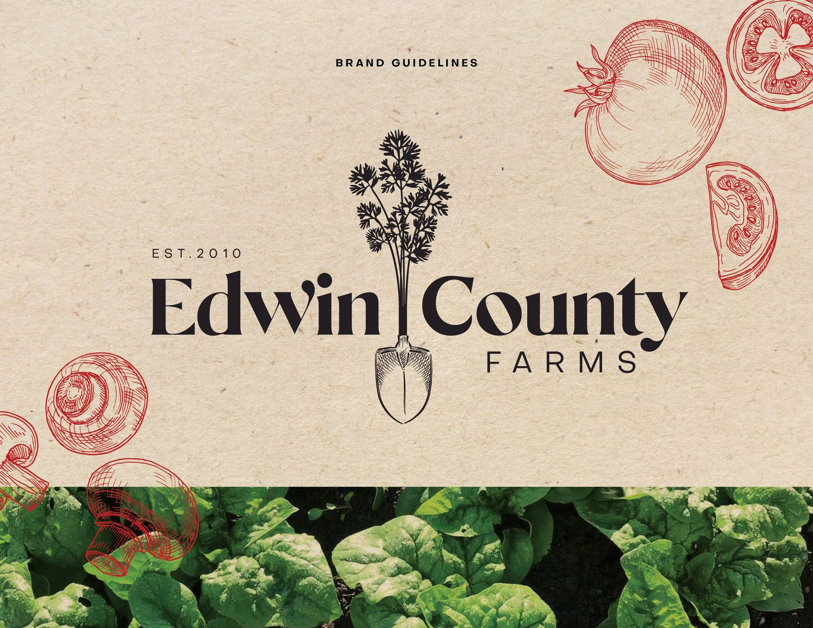
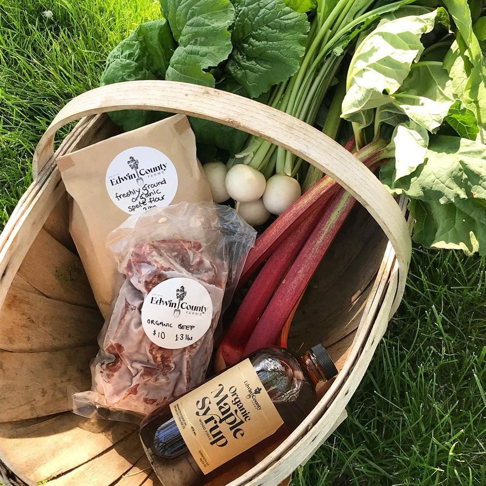
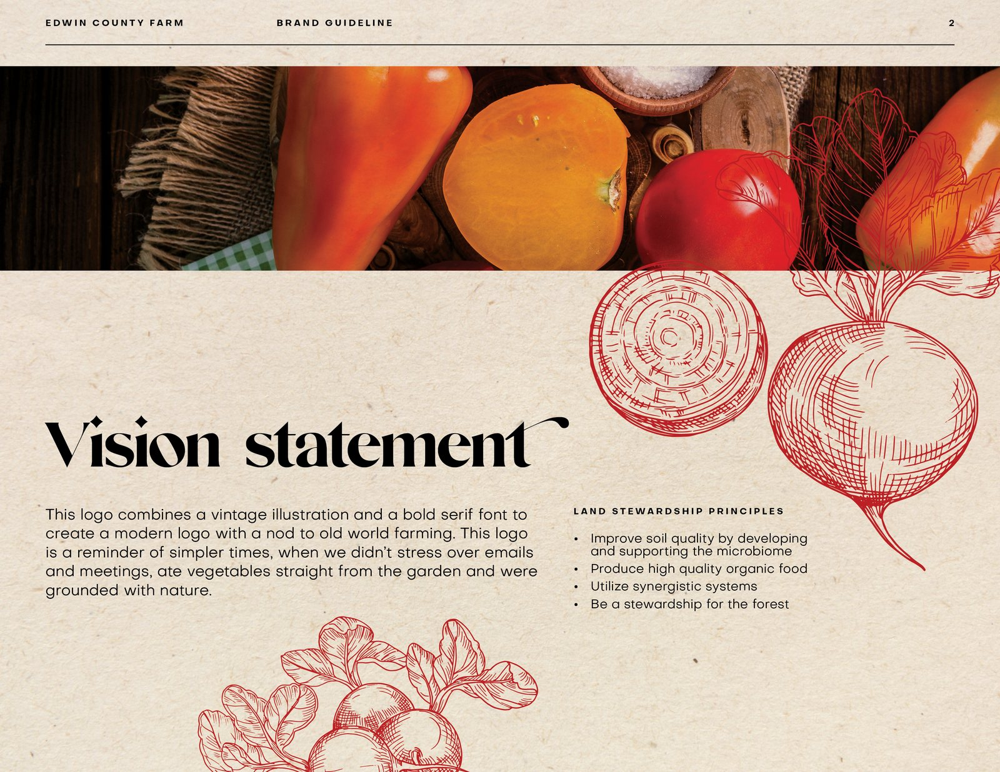
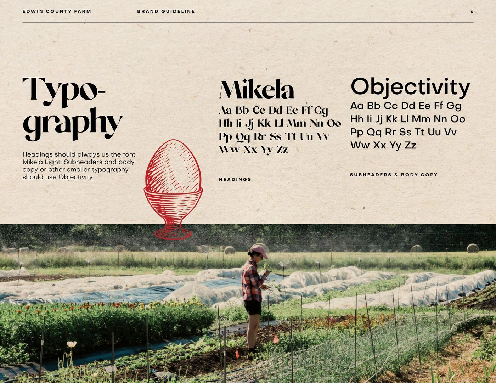
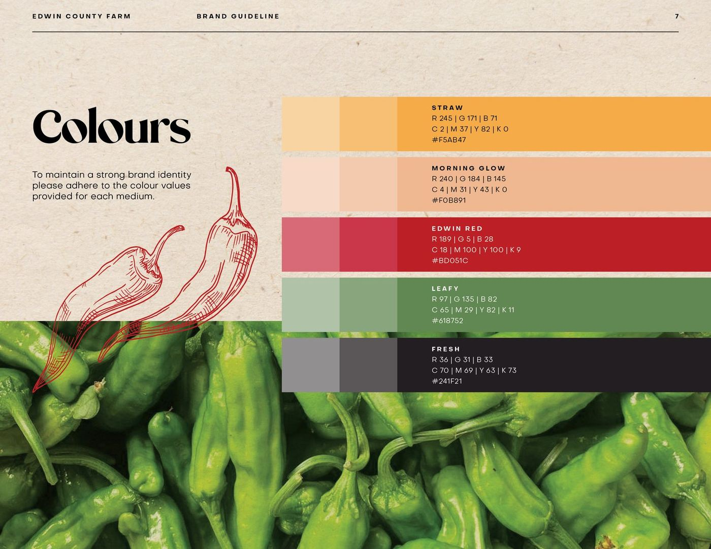
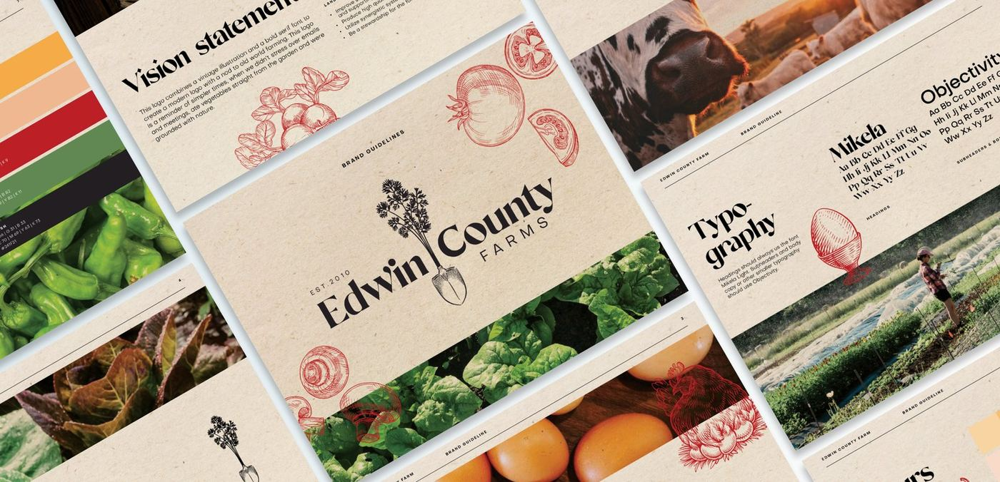

edwin county farms.
a real farm deserves better than clip-art carrots.
Edwin County Farms grows organic beef, grain and maple syrup in Prince Edward County, supplying local chefs and feeding neighbours through markets and the farm stand.
The farm didn't need “rustic.” It already had dirt under its nails. It needed an identity with enough character for the farm stand and enough discipline for a restaurant menu.
a fork, a field and a very useful shade of red.
The garden fork became the mark. Etched vegetables brought the texture. A simple system kept the whole thing from turning into faux-farmhouse theatre.
- brand identity — logo & secondary marks
- illustration system — vintage etched produce
- packaging — farm stand labels & goods
- typography & colour system
- brand guidelines
looks handmade. works like a system.
the mark
A sturdy serif wordmark, split neatly by a garden fork. It holds up on a syrup label, a crate stamp and the sign at the end of the road.
the illustrations
Heirloom vegetables, etched in one punchy red. Enough old-world texture to make kraft paper feel intentional.
type & colour
Mikela does the talking. Objectivity does the work. Straw, market red and crop green do exactly what their names suggest.
the guidelines
A useful book for logo, type, colour and photography, so the brand stays itself whoever happens to be holding the label gun.





